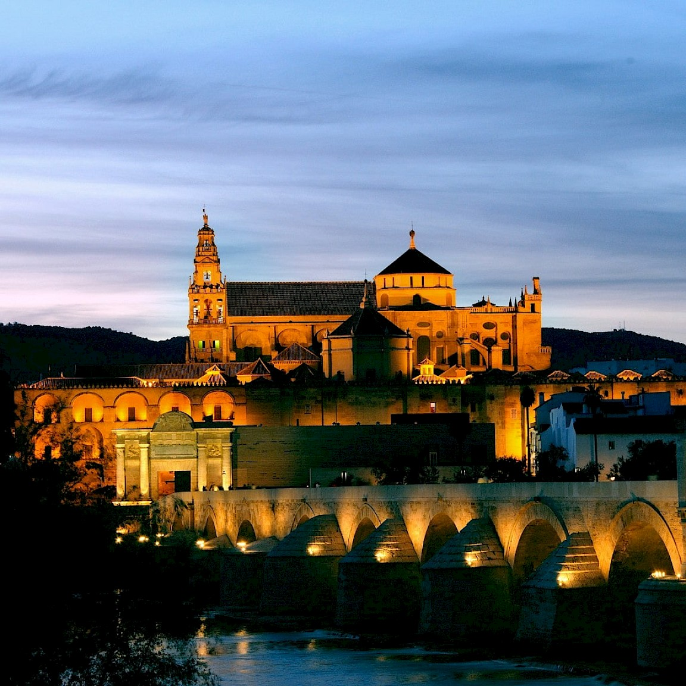

La Mezquita de Córdoba es una famosa mezquita ubicada en Córdoba, España. Es uno de los monumentos más emblemáticos de la ciudad y una obra maestra del arquitecto Muhammad ibn Yusuf.
La construcción de la Mezquita de Córdoba comenzó en 784 d.C. y fue ampliada y modificada a lo largo de los siglos. Su diseño combina elementos del estilo islámico con influencias romanas y bizantinas, lo que le confiere un estilo único y distintivo.
La mezquita cuenta con impresionantes arcos, columnas y detalles arquitectónicos que representan escenas islámicas. Su interior es igualmente impresionante, con un patio central rodeado por una galería de arcos que ilumina el espacio con luz natural.
La Mezquita de Córdoba ha sido declarada Patrimonio de la Humanidad por la UNESCO y atrae a millones de visitantes cada año. Su importancia cultural, artística y religiosa la convierte en un símbolo icónico de Córdoba y de España.
Si deseas obtener más información sobre La Mezquita de Córdoba, puedes visitar el sitio web oficial: Mezquita de Córdoba - Sitio Oficial.
